OASS for Algorithmic Trading
This tutorial is an example of applying OASS to algorithmic trading. Leveraging OASS, we can train a neural network model to make buy and sell decisions directly and achieve maximum returns.
Before we start, we need to build a DAG to transform the algorithmic trading problem into a path planning problem. This DAG is shown in the following figure.
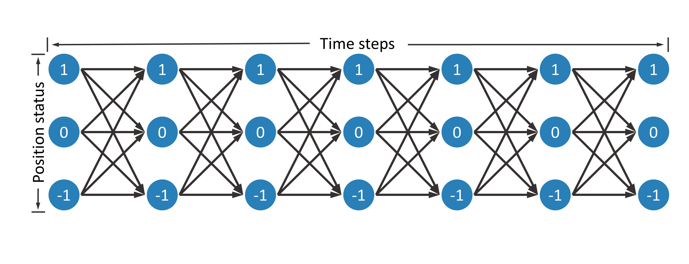Suppose there are  time steps, denoted as 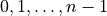. At each time step, the trader can hold
time steps, denoted as 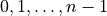. At each time step, the trader can hold  ,
,  or 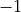 units of stock.
or 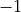 units of stock.
Holding
unit of stock can benefit from the increase of stock priceHolding
units of stock is risk averseHolding units of stock can benefit from the decrease of stock price
Therefore, there are a total of 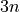 nodes in this DAG, and each node can be represented as  , where
, where  represents a time step, and 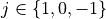 indicates the number of stocks held, that is, the position status. When the position status of two adjacent time steps changes, the trader will buy or sell stocks.
represents a time step, and 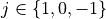 indicates the number of stocks held, that is, the position status. When the position status of two adjacent time steps changes, the trader will buy or sell stocks.
Next, consider how to define node rewards and edge rewards. We hope that the reward can directly represent the profit of trading, so we define the side reward as the amount of change in money.
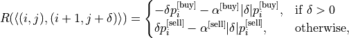
where 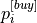 and 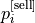 denote the buying and selling prices at the time step  , respectively. Usually 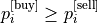. 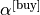 and 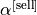 denote the cost ratio when buying and selling, respectively. In this tutorial, we take the Chinese stock market as an example, thus 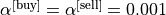.
, respectively. Usually 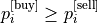. 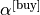 and 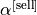 denote the cost ratio when buying and selling, respectively. In this tutorial, we take the Chinese stock market as an example, thus 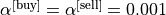.
According to the above definition of side reward, the trader can receive a high reward if it decides to sell. To avoid this situation, we define the node reward for the last time step as the value of the stock held.
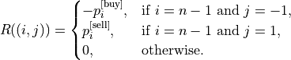
Thus, the sum of the rewards on the path is the actual return, and OASS can directly pursue high return end-to-end.
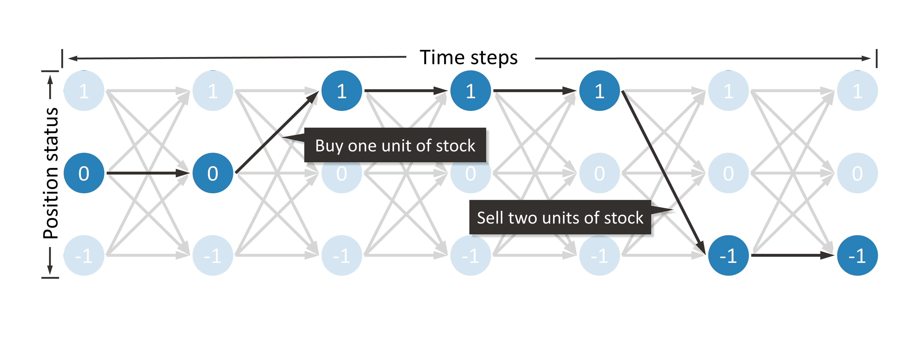Since prices vary greatly from stock to stock, it is necessary to normalize the prices, which is very simple.
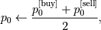
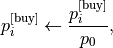
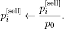
The above process has been packaged in oass.AlgorithmicTrading.TrainerOASS.
import matplotlib.pyplot as plt
import numpy as np
import torch
import oass
We introduce several parameters, where DEVICE indicates the computing device. We use GPU directly. We will describe other parameters later.
SEQUENCE_LENGTH = 240
HEAD_MASK = 20
TAIL_MASK = 220
INPUT_SIZE = 49
DEVICE = torch.device("cuda")
Read the data. The dataset is stored in .npz format, and you can use the np.savez_compressed function to get a file in .npz format. The data needs to contain three parts.
input_data: The observation matrix of the model at each time step.shape=(SEQUENCE_NUM, SEQUENCE_LENGTH, INPUT_SIZE)buy_price: The price when buying at the buy time step, i.e. 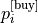.shape=(SEQUENCE_NUM, SEQUENCE_LENGTH)sell_price: The price when selling at the buy time step, i.e. 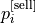.shape=(SEQUENCE_NUM, SEQUENCE_LENGTH)
Due to the privacy of financial data, We are sorry that we cannot provide large-scale real data, we can only provide a sample data, but it is enough to demonstrate the power of OASS.
def get_dataloader(file_path):
data = np.load(file_path, allow_pickle=True)
input_data = torch.tensor(data["input_data"], dtype=torch.float)
buy_price = torch.tensor(data["buy_price"], dtype=torch.float)
sell_price = torch.tensor(data["sell_price"], dtype=torch.float)
dataset = torch.utils.data.TensorDataset(input_data, buy_price, sell_price)
data_loader = torch.utils.data.DataLoader(
dataset=dataset,
batch_size=32,
shuffle=True
)
return data_loader
data_loader_train = get_dataloader("data/at/example_train_data.npz")
Build a neural network model that is a very simple multilayer LSTM model with input BATCH_SIZE 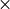 SEQUENCE_LENGTH INPUT_SIZE observation and output BATCH_SIZE SEQUENCE_LENGTH  decision probabilities.
decision probabilities.

class TradeModel(torch.nn.Module):
'''A basic model for OASS. This model contains a multilayer LSTM and a Fully connected layer. This model only takes environment states as input. The output at each time step is a 9-dimensional vector, i.e., a 3x3 matrix.
Args:
input_size (int): The dimension of environment state at one time step.
hidden_size (int): The hidden_size in LSTM module.
num_layers (int): The number of layer in LSTM module.
dropout (int): The dropout probability of each layer except the last layer in LSTM module.
'''
def __init__(self, input_size, hidden_size=32, num_layers=3, dropout=0.2):
super(TradeModel, self).__init__()
self.LSTM_layers = torch.nn.LSTM(
input_size=input_size, hidden_size=hidden_size, num_layers=num_layers, dropout=dropout, batch_first=True)
self.actor_layer = torch.nn.Linear(hidden_size, 9, bias=False)
def forward(self, x):
'''Forward function.
Args:
x (torch.tensor): A batch of sequencial environment states. The shape is ``(batch_size, sequence_length, input_size)``.
Returns:
action_prob (torch.tensor): The model\'s output. The shape is ``(batch_size, sequence_length, 3, 3)``.
'''
x = self.LSTM_layers(x)[0]
action_prob = self.actor_layer(x)
action_prob = action_prob.reshape((
action_prob.shape[0],
action_prob.shape[1],
3, 3
))
action_prob = torch.softmax(action_prob, axis=-1)
return action_prob
Considering the structure of the LSTM model, there is not enough historical information to make reliable decisions in the first few time steps of the sequence. Considering the principle of the OASS algorithm, there is not enough future information in the last few time steps to generate rewards. Therefore, we ignore the opening and closing time steps, which can be achieved by modifying the HEAD_MASK and TAIL_MASK parameters.
trainer = oass.AlgorithmicTrading.TrainerOASS(
head_mask = HEAD_MASK,
tail_mask = TAIL_MASK,
sequence_length = SEQUENCE_LENGTH,
buy_cost_pct = 0.001,
sell_cost_pct = 0.001,
device = DEVICE
)
model = TradeModel(input_size=49, hidden_size=16, num_layers=3).to(DEVICE)
optimizer = torch.optim.Adam(model.parameters())
decision_maker = oass.AlgorithmicTrading.DecisionMakerOASS(
head_mask = HEAD_MASK,
tail_mask = TAIL_MASK,
device = DEVICE
)
A sequence is selected in the training data to show the decisions of the model before training.
example_data = np.load("data/at/example_train_data.npz", allow_pickle=True)
example_id = 0
example_input_data = example_data["input_data"][example_id: example_id+1]
example_buy_price = example_data["buy_price"][example_id: example_id+1]
example_sell_price = example_data["sell_price"][example_id: example_id+1]
example_data.close()
def show_decision(decision_maker, model, input_data, buy_price, sell_price):
signal_data = (decision_maker(model, input_data) - 1).tolist()
buy_price, sell_price, signal_data = buy_price[0], sell_price[0], signal_data[0]
plt.figure(figsize=(16,9))
plt.subplot(3,1,1)
plt.plot(buy_price, label="buy price")
plt.plot(sell_price, label="sell price")
buy_point = [i for i in range(1, len(signal_data)) if signal_data[i]>signal_data[i-1]]
for i,p in enumerate(buy_point):
if i==0:
plt.axvline(p, color="#2ca02c", label="buy point")
else:
plt.axvline(p, color="#2ca02c")
sell_point = [i for i in range(1, len(signal_data)) if signal_data[i]<signal_data[i-1]]
for i,p in enumerate(sell_point):
if i==0:
plt.axvline(p, color="#d62728", label="sell point")
else:
plt.axvline(p, color="#d62728")
plt.legend()
plt.subplot(3,1,2)
plt.plot(signal_data, label="position")
plt.ylim(-1.2,1.2)
plt.legend()
plt.subplot(3,1,3)
money, stock = 0, 0
asset_list = []
for buy_p, sell_p, signal in zip(buy_price, sell_price, signal_data):
if signal>stock:
delta = signal - stock
money -= delta * buy_p
money -= delta * buy_p * 0.001
else:
delta = stock - signal
money += delta * sell_p
money -= delta * sell_p * 0.001
stock = signal
asset_list.append(money + stock*(buy_p+sell_p)/2)
plt.plot(asset_list, label="asset")
plt.legend()
show_decision(decision_maker, model, example_input_data, example_buy_price, example_sell_price)

Next, we start the training process. Note that we use curriculum learning to first train with no transaction costs to encourage the model to capture short-term market changes, and then gradually increase the transaction costs to guide the model to construct a robust investment strategy. Formally, a difficulty factor 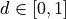 is defined. The transaction price 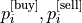 and the rate 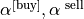 are affected by this.
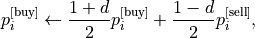
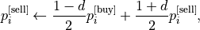
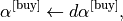
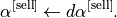
for epoch in range(1000):
trainer.difficulty = max((epoch+1-200)/800, 0)
_, reward_train = trainer.train_epoch(model, data_loader_train, optimizer)
print("epoch:", epoch, "reward:", reward_train)
show_decision(decision_maker, model, example_input_data, example_buy_price, example_sell_price)
epoch: 0 reward: -4.729216948063408e-05 epoch: 1 reward: -2.0203719886443567e-05 epoch: 2 reward: -5.471992694477254e-06 epoch: 3 reward: 6.819567828551503e-06 epoch: 4 reward: -1.1619394611772117e-05 epoch: 5 reward: 3.274395907648531e-05 ... epoch: 995 reward: 0.04295553291798985 epoch: 996 reward: 0.03634062086589008 epoch: 997 reward: 0.03797032271239929 epoch: 998 reward: 0.038265388261650886 epoch: 999 reward: 0.038311712370954334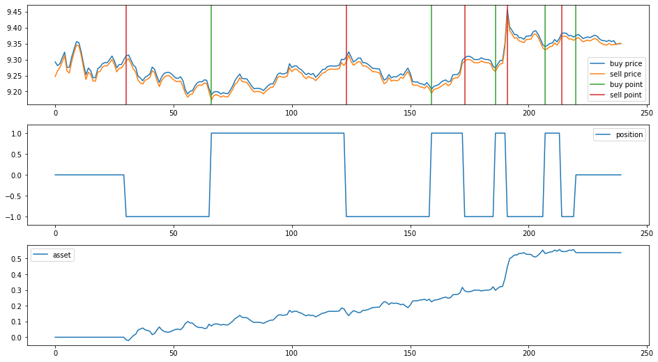
It is evident that with the assistance of OASS, the model is able to find high-return investment decisions.